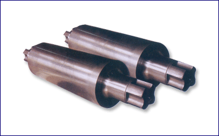

- 冶金轧辊
- 大型工业磨床
- 特冶熔炼设备
- 磨辊间管理系统
- 磨床改造服务
- 钢厂常用备件
-
耐磨性高，耐热性好，硬度高，产生氧化膜的能力强。可以提升轧制轧辊的板型控制、抗事故性和表面质量，提高产量和良品率。
高速钢轧辊
-

合金无限冷硬铸铁轧辊是介于冷硬铸铁轧辊和灰口铸铁轧辊之间的一种材质轧辊。除具有较好的耐磨性外，还具有交好的抗剥落性、抗热裂性。
用途：棒、线材，型钢轧机中、精轧机架轧辊；无缝钢管轧机张减径辊环。合金无限冷硬铸铁轧辊
-

H型钢复合辊环是目前广泛应用于万能轧机的轧辊，它是由高耐磨性的半钢与强韧性优良的石墨钢离心复合而成。半钢的组织特点是10－20%的渗碳体断续地分布在贝氏体和细珠光体的混合组织上，使其具备较高的综合度要求，所以生产中要采用特殊的热处理设备与技术。
用途：万能轧机的水平辊和立辊H型钢复合辊环
-

半钢轧辊是含碳量1.2~2.2%，并添加有适量Cr，Mo，Ni等合金元素的轧辊。经过正火、淬火、回火处理后既具有铸铁轧辊耐磨性又具有铸钢轧辊的高强韧性整个工作层中的硬度落差很小。
用途：应用于带钢热连轧机粗轧、精轧前架用辊及立辊；热轧带钢支撑辊；型钢、轨梁轧机、棒材轧机的粗轧、中轧用辊；万能轧机水平辊、立辊、辊套等。半钢轧辊
-

使用中频感应炉熔炼优质钢水，采用先进的造型、浇注工艺铸造，再经过热处理工艺，辊身工作层基体组织为回火索氏体，获得高强度、良好耐热性、韧性和耐磨性。
用途：型钢粗、中轧机架水平及立辊，带钢热连轧机，大棒材粗轧机。铸钢轧辊
-

支撑着工作辊，通过工作辊接触轧件可以减小工作辊直径、增强工作辊刚度的轧辊。
支撑辊


-

真空感应熔炼炉VIM是一种比较常见的真空感应炉炉型，主要是用来生产金属坯料供后道重熔或加工使用。在熔炼室内完成金属原料的熔化、精炼过程，通过倾翻熔炼室将金属液注入流槽，并沿着流槽方向浇铸进预先摆放的钢锭模内。
真空感应炉VIM
-

1.采用单炉头双工位的结构，提升了生产效率。
2.也可以采用双炉头三工位交换电极的方式，生产大规格电渣重熔铸锭
3.采用独立式龙门架形式，提供了稳定的结构设计
4.采用全同轴设计，避免了电流磁场对合金凝固的影响，降低了局部微观偏析的风险
5.采用先进的称重系统，实现全自动熔速控制功能
6.采用预设定的工艺菜单，通过PC+PLC系统实现更为精确的自动工艺控制，保证了熔炼过程的重复性及一致性采用保护气氛控制系统，可以保证在烟雾罩内实现微正压环境，隔绝了空气中的氮氧影响到炉内的熔炼气氛单伺服电机控制系统，保证料杆移动过程中的精确运行电渣重熔炉ESR
-

是一种在真空环境中利用电弧熔炼金属的设备，主要用于熔炼钛、锆、钼等活泼金属和难熔金属，也适用于耐热钢、不锈钢、工具钢、轴承钢等材料的熔炼。
真空自耗炉VAR
-

中频感应熔炼炉简称中频炉，中频感应技术应用广泛，在铸造、冶金等领域有着无可比拟的优势。中频感应熔炼炉熔炼过程中能有效地控制和调节合金成分，生产出高性能的金属和合金材料。中频熔炼炉特有的电磁搅拌功能，能有效避免合金熔炼中产生元素偏析的现象，金属经过熔炼后能铸造出高质量的铸件。
中频感应炉IMF
-

中频电源自从发明以来，经历了几十年发展，目前主流中频电源设计分为:逆变并联谐振中频电源和逆变串联谐振中频电源。我司具备成熟的设计团队，能按客户的需求自主设计并制造以上两种电源。
中频电源PS

背景：
东南亚许多钢厂的磨床从投产使用至今，电气设备已经严重老化，且大部分电气设备备件已停产，备件缺乏，机械传动件精度下降严重，设备运行状态已不稳定，存在严重的设备隐患,且磨床的磨削精度也得不到有效保障。
改造服务：
我司可以对磨床进行全面电气系统升级及机械修理，预先对设备现状进行实地检测，对可能损坏的零配件进行采购或测绘加工，待所有零配件准备齐当后，即刻按计划对设备实施修、配、改。